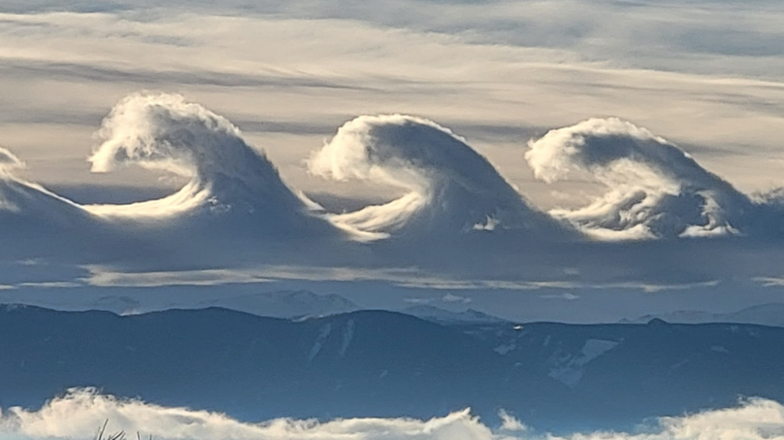

Lenticularis
Awan Lenticularis adalah formasi awan berbentuk lensa atau cakram yang terbentuk di puncak gunung atau di wilayah berangin. Awan ini tampak seperti piring terbang melayang di langit, menciptakan pemandangan menakjubkan dengan bentuknya yang halus dan simetris.
Kelvin-Helmholtz
Awan Kelvin-Helmholtz adalah formasi awan yang menyerupai gelombang laut bergulung di langit, terbentuk akibat perbedaan kecepatan angin di dua lapisan atmosfer. Fenomena ini menciptakan pemandangan langit yang unik dengan pola gelombang indah.
